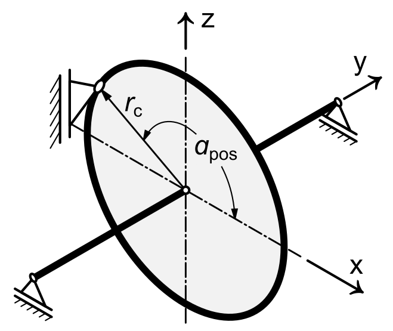

|
|
|


支承
支承是相关轴的一种通用边界条件。您可以根据自己的要求配置此边界条件。您可以将所有相关自由度建模为非定位、弹性或刚性。相关自由度包括：
- 径向位移
- 轴向位移
- 转动
- 倾斜
您还可以根据需要为这些自由度输入刚度或游隙。下表列出了常用轴承类型也可用的不同模板：
| 支承选择列表 | 径向位移 | 轴向位移 | 转动 | 倾斜 |
| 自定义输入 | 自定义定义 | 自定义定义 | 自定义定义 | 自定义定义 |
| 非定位轴承 | 固定 | 非定位 | 非定位 | 非定位 |
| 固定轴承，双侧调整 <-> | 固定 | 固定 | 非定位 | 非定位 |
| 固定轴承，右侧调整 -> | 固定 | 右 | 非定位 | 非定位 |
| 固定轴承，左侧调整 <- | 固定 | 左 | 非定位 | 非定位 |
| 推力轴承，双侧调整 <-> | 非定位 | 固定 | 非定位 | 非定位 |
| 推力轴承，右侧调整 -> | 非定位 | 右 | 非定位 | 非定位 |
| 推力轴承，左侧调整 <- | 非定位 | 左 | 非定位 | 非定位 |
| 固定 | 固定 | 固定 | 固定 | 固定 |
表 25.2：自由度定义（位移和旋转）
您还可以为旋转自由度定义载荷谱。
为确保与早期 KISSsoft 版本兼容，您还可以使用笛卡尔坐标来配置自由度（通过使用笛卡尔支承）：
| 支承选择列表 | ux | uy | uz | rx | ry | rz |
| 自定义输入 | 自定义定义 | 自定义定义 | 自定义定义 | 自定义定义 | 自定义定义 | 自定义定义 |
| 非定位轴承 | 固定 | 非定位 | 固定 | 非定位 | 非定位 | 非定位 |
| 固定轴承，双侧调整 <-> | 固定 | 固定 | 固定 | 非定位 | 非定位 | 非定位 |
| 固定轴承，右侧调整 -> | 固定 | 右 | 固定 | 非定位 | 非定位 | 非定位 |
| 固定轴承，左侧调整 <- | 固定 | 左 | 固定 | 非定位 | 非定位 | 非定位 |
| 推力轴承，双侧调整 <-> | 非定位 | 固定 | 非定位 | 非定位 | 非定位 | 非定位 |
| 推力轴承，右侧调整 -> | 非定位 | 右 | 非定位 | 非定位 | 非定位 | 非定位 |
| 推力轴承，左侧调整 <- | 非定位 | 左 | 非定位 | 非定位 | 非定位 | 非定位 |
| 固定 | 固定 | 固定 | 固定 | 固定 | 固定 | 固定 |
表 25.3：自由度定义（笛卡尔）
ux、uy、uz：x、y 和 z 方向的位移
rx、ry、rz：绕 x、y 和 z 轴的旋转
您可以在支承选择列表中选择或任意类型的，以获得选项。该选项允许您对偏心效应建模，这种效应出现在推力支承未作用于轴轴线中心的情况下。选择该选项后，将考虑作用在轴上的附加弯矩。该弯矩通过将支承中的轴向力乘以轴轴线与支承作用点之间的距离来计算。作用点可以通过输入字段和来设置（参见图 25.4）。此外，作用点也可以从所选齿轮推导得出，其中定义为工作节圆直径 Dpw 的一半，是所选齿轮与配对齿轮啮合的角度。

图 25.4：偏心推力轴承选项的作用点定义
Support
A support is a generic boundary condition for the associated shaft. You can configure this boundary condition to suit your own requirements. You can model all relevant degrees of freedom as non-locating, elastic or rigid. The relevant degrees of freedom are:
- Displacement in radial direction
- Displacement in axial direction
- Rotation
- Tilting
You can also input the stiffness or clearance as required for these degrees of freedom. The next table lists the different templates that are also available for commonly used bearing types:
| Support selection list | Radial displacement | Axial displacement | Rotation | Tilting |
| Own Input | Own definition | Own definition | Own definition | Own definition |
| Non-locating bearing | fixed | non-locating | non-locating | non-locating |
| Fixed bearing adjusted on both sides <-> | fixed | fixed | non-locating | non-locating |
| Fixed bearing adjusted on right side -> | fixed | right | non-locating | non-locating |
| Fixed bearing adjusted on left side <- | fixed | left | non-locating | non-locating |
| Thrust bearing adjusted on both sides <-> | non-locating | fixed | non-locating | non-locating |
| Trust bearing, adjusted on right side -> | non-locating | right | non-locating | non-locating |
| Trust bearing adjusted on left side <- | non-locating | left | non-locating | non-locating |
| Fixed | fixed | fixed | fixed | fixed |
Table 25.2: Definition of degree of freedom (displacement and rotation)
You can also define a load spectrum for the rotation degree of freedom.
To ensure compatibility with previous versions of KISSsoft, you can also use Cartesian coordinates to configure the degree of freedom (by using Cartesian support):
| Support selection list | ux | uy | uz | rx | ry | rz |
| Own Input | Own definition | Own definition | Own definition | Own definition | Own definition | Own definition |
| Non-locating bearing | fixed | non-locating | fixed | non-locating | non-locating | non-locating |
| Fixed bearing adjusted on both sides <-> | fixed | fixed | fixed | non-locating | non-locating | non-locating |
| Fixed bearing adjusted on right side -> | fixed | right | fixed | non-locating | non-locating | non-locating |
| Fixed bearing adjusted on left side <- | fixed | left | fixed | non-locating | non-locating | non-locating |
| Thrust bearing adjusted on both sides <-> | non-locating | fixed | non-locating | non-locating | non-locating | non-locating |
| Trust bearing, adjusted on right side -> | non-locating | right | non-locating | non-locating | non-locating | non-locating |
| Trust bearing adjusted on left side <- | non-locating | left | non-locating | non-locating | non-locating | non-locating |
| Fixed | fixed | fixed | fixed | fixed | fixed | fixed |
Table 25.3: Definiton of degree of freedom (Cartesian)
ux, uy, uz: Displacement in x-, y- and z-direction
rx, ry, rz: Rotation about x-, y- and z-direction
You can either select or any kind of in the support selection list to have the option available. This option allows you to model the effect of eccentricity which occurs if the thrust support is not acting in the center of the shaft axis. By selecting this option an additional bending moment acting on the shaft is considered. This bending moment is calculated by multiplying axial force in the support with the distance between the shaft axis and the point of application of the support. The point of application can be set with the input fields and (see Figure 25.4). In addition, the point of application can also be derived from the selected gear, where is defined as half of the operating pitch diameter Dpw and is the angle at which the selected gear meshes with the counter gear.
Figure 25.4: Definition of point of application for option Eccentric thrust bearing